That’s all, Folks!

Henrique Veras
Part 17 (Chapters 18 and 19)
Consider the market for used cars.
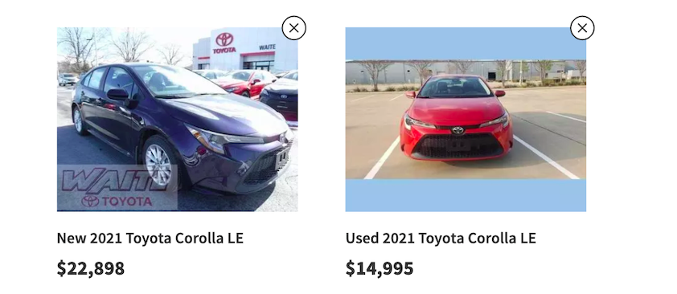
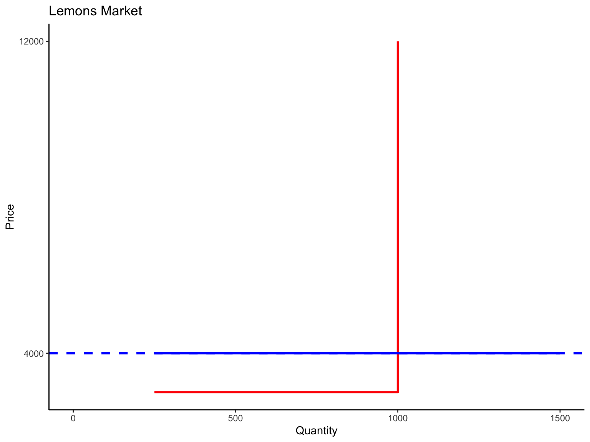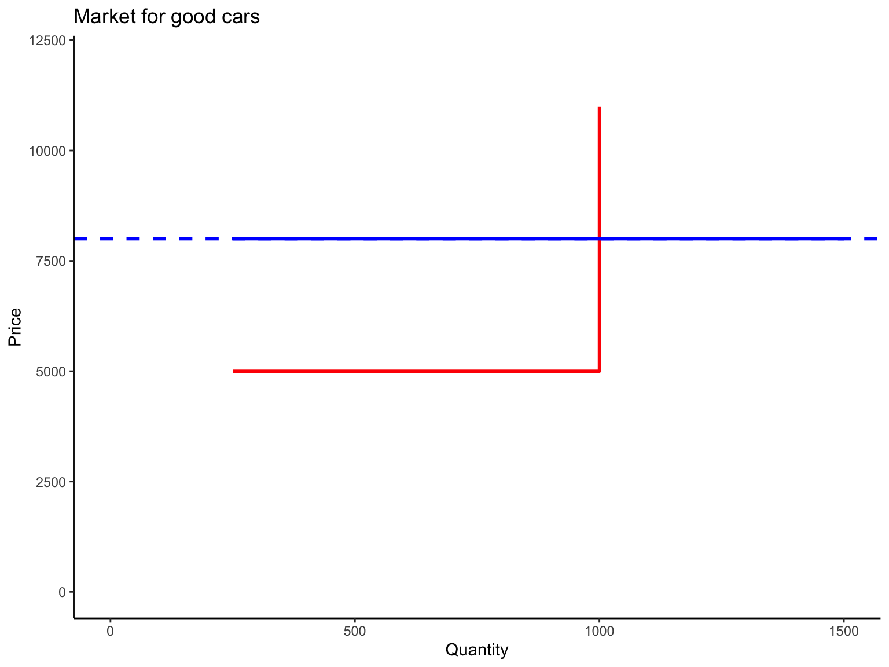
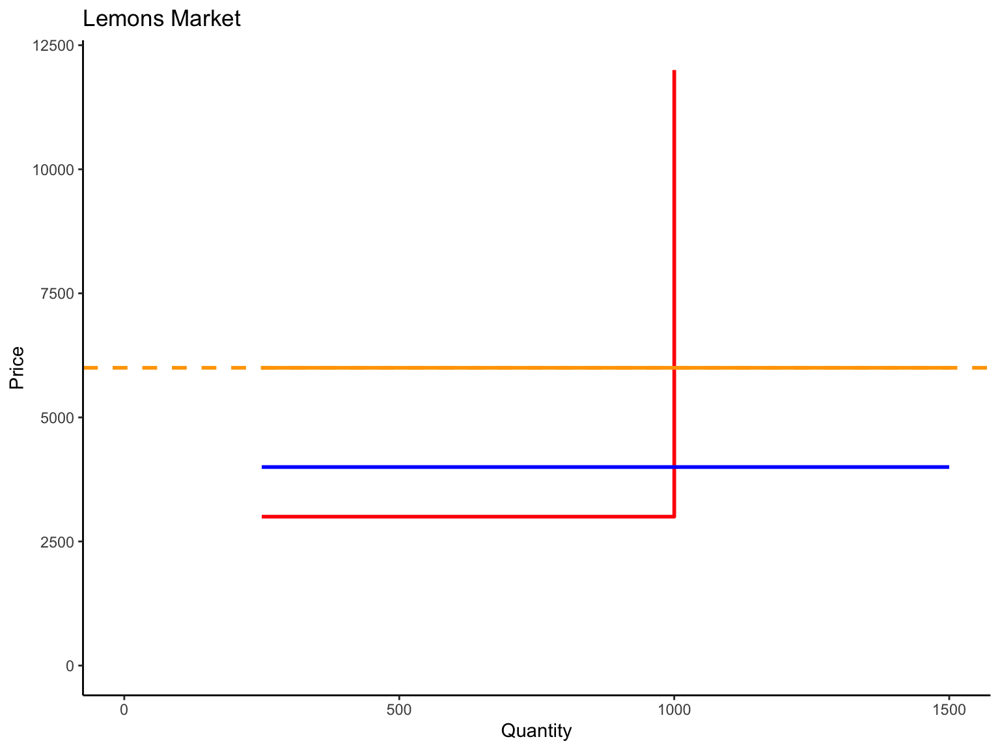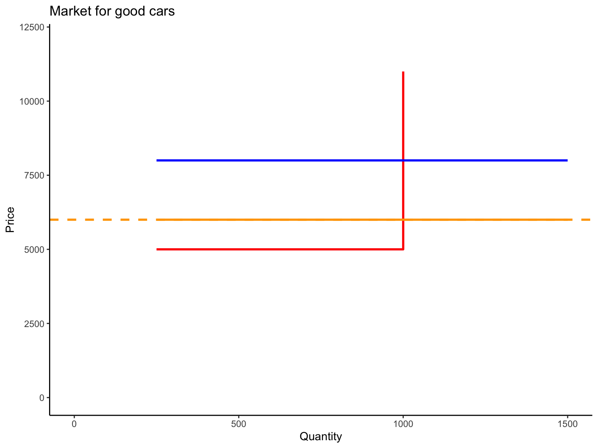
This simple example is based on a paper published by George Akerlof in the Quarterly Journal of Economics (QJE), in 1970.
Before being accepted at QJE, Akerlof faced some rejections along the way:
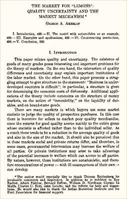
The figure below shows the market for (used and new) cars in a given town. Suppose that there are 1,000 car owners (10% used and 90% new).
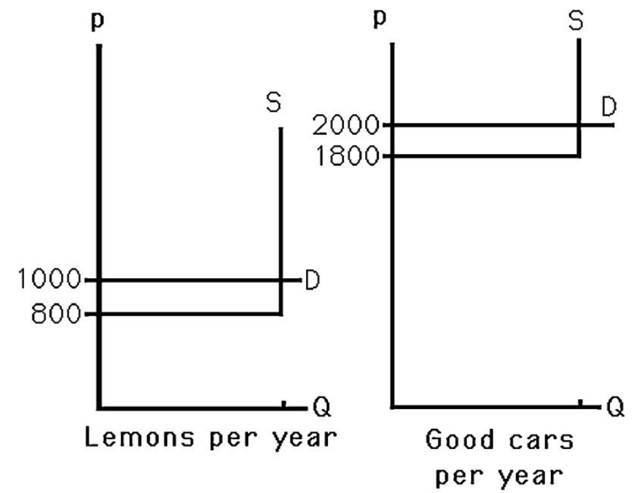
What are price and equilibrium quantities with symmetric (full) information?
What are price and equilibrium quantities with symmetric (incomplete) information?
What are price and equilibrium quantities with asymmetric information?
Now assume that there are 1,000 car owners (90% used and 10% new).
What are price and equilibrium quantities with symmetric (full) information?
What are price and equilibrium quantities with symmetric (incomplete) information?
What are price and equilibrium quantities with asymmetric information?
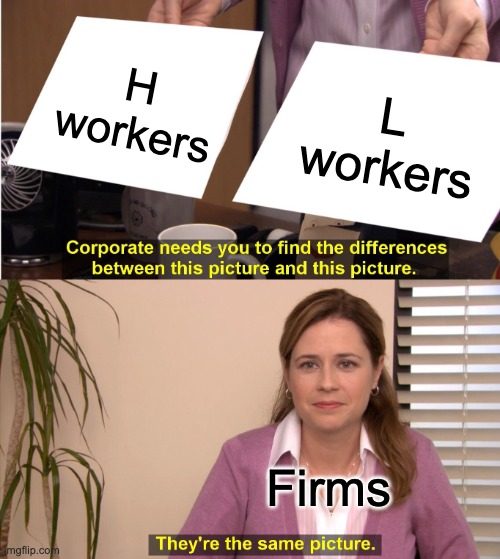
Suppose that Cindy is in a job interview for one position in a firm.
She might be offered (or not) either a demanding or an undemanding job
Cindy and the firm have the same goal: be assigned to the job according to her ability.
The game below depicts this story:
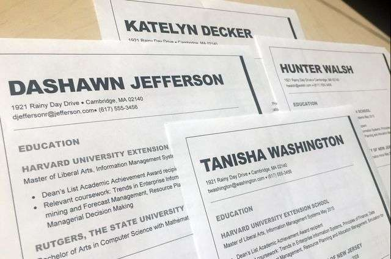
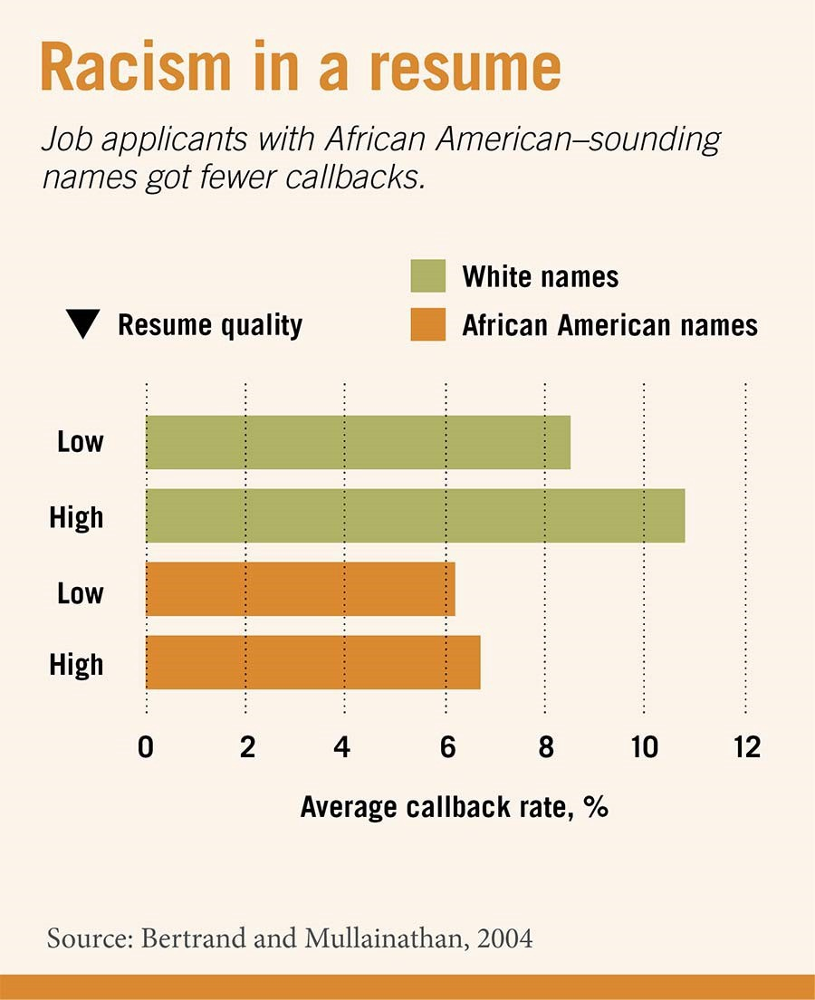
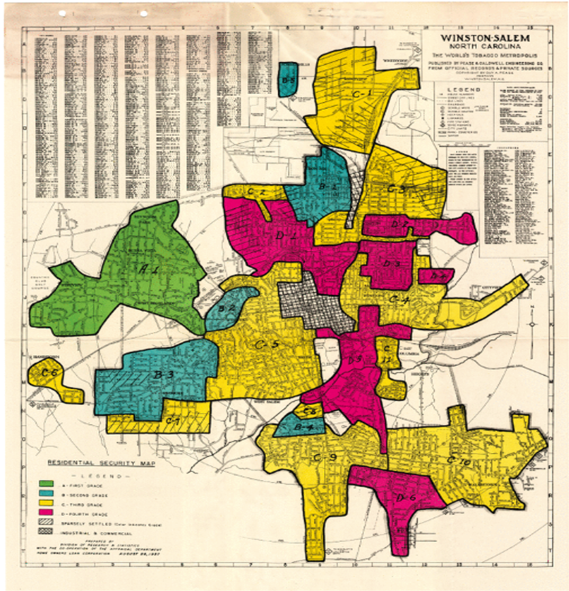
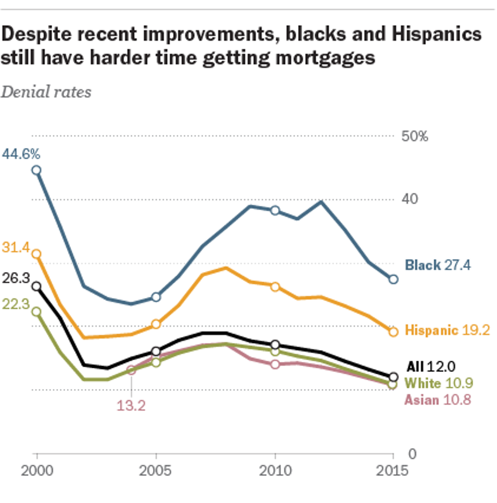